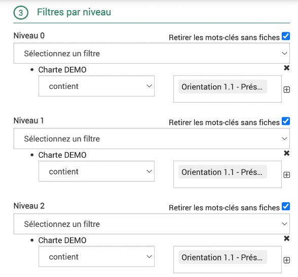
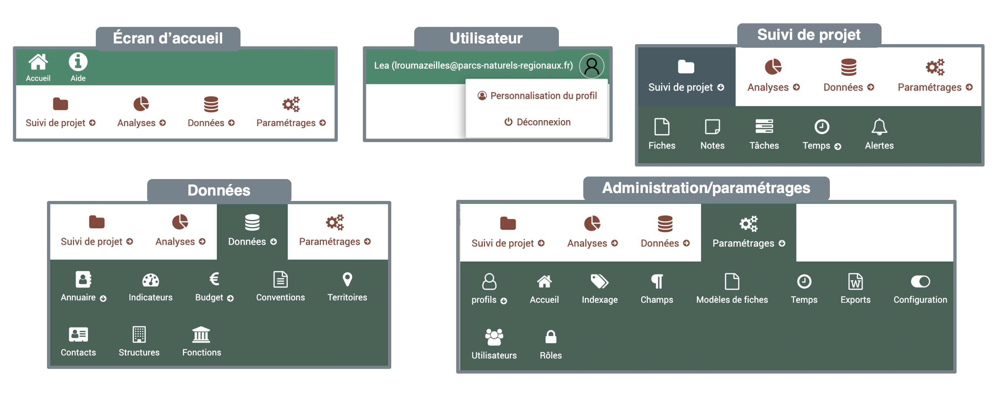

Développements 2023 07
Contexte
Un déploiement des derniers développements sur le logiciel EVA a lieu le 4/07/2023 après 18h. Il comprend des résolutions d’anomalies, des améliorations des fonctionnalités existantes et des ajouts de fonctionnalités avec notamment une nouvelle organisation des modules.
Les développements sont détaillés ci-après, avec le détail du ticket GitLab associé (il faut un compte pour le consulter) et un mode d’emploi pour les nouveautés.
Avertissement
Pour bien faire appraître les modifications, vider votre cache ! Procédure Chrome; Procédure Mozilla firefox; Procédure Edge; Procédure Safari; Procédure Opéra; Procédure Brave
La première page doit ressembler à ceci :

Et non à ceci :

Anomalies résolues
1. Apparence du point rouge
Ticket 330 : Dans certain navigateur, au moment de l’édition d’une fiche, le point rouge d’ajout de fiche est traversé par une barre verte car il y a un ajout d’une barre grise en bas.
{kind=link}
Corrigé
2. Export Word indicateurs
Ticket 133 : L’export Word des indicateurs repérait l’année la plus récente renseignée parmi toutes les mesures de tous les indicateurs à exporter et n’exportait que les mesures de cette même année pour tous les indicateurs en ignorant les autres. Ainsi, par exemple, si un seul indicateur a une mesure en 2023 et les autres des mesures en 2022, seules les mesures de 2023 ressortent.
Corrigé : Maintenant toutes les valeurs cibles et réalisées pour chaque indicateur sont exportées.
Note
Il est possible de filtrer les années des mesures si on le souhaite dans le paramétrage global de l’export (qui filtrera aussi les autres données datées de temps et de budget)

3. Anomalie export arborescent
Ticket 395 : Il y avait plusieurs anomalies dans les exports arborescents : - La description des mots clés ne s’affichait pas - Les données budgétaires et de temps n’étaient pas agrégées correctement - Les différents niveaux de fiches et de mots clés n’étaient pas respectés
{kind=link}
Corrigé
Note
Les niveaux dans les exports arborescents fonctionnent comme suit : - Feuille/Nœud/Parent concernent les mots clés/référentiels, le premier niveau sera un parent, s’il n’y a qu’un niveau, il sera parent. Le niveau le plus bas sera une feuille et tous les niveaux intermédiaires seront des nœuds. - Les fiches sont rattachées à chaque niveau et peuvent être formattées différemment
4. Anomalie filtre arborescent
Ticket 377 : Dans les filtres de l’affichage des fiches arborescent, les filtres sur les niveaux ne fonctionnaient plus.
Par exemple, si l’on souhaite voir apparaître dans une arborescence de charte, uniquement les fiches rattachées à l’axe 1 et l’orientation 1.1, voici les filtres à sélectionner :
{kind=link}
{kind=link}
Il faut bien cocher la case « Retirer les mots-clés sans fiches » pour ne pas faire apparaître les autres titres du mot-clé/référentiel.
Ensuite, il faut sélectionner pour chaque niveau les bonnes parties du mot-clé/référentiel. Par exemple ici, l’axe correspond au niveau 0 donc il faut sélectionner l’axe 1 dans les filtres du niveau 0, puis l’orientation 1.1 dans les filtres du niveau 1 puis les mesures associées à l’orientation 1.1 dans les filtres du niveau 2.
Corrigé : La case à cocher pour les référentiels « Décochez cette case pour désactiver la recherche arborescente » a été supprimée, car elle ne fonctionnait pas en arborescence.
{kind=link}
Pour rappel, dans la liste des fiches, elle aurait par exemple permis dans l’exemple ci-dessus de ne pas sélectionner les fiches des mesures 1.1.2 et 1.1.1 mais seulement la fiche « Fiche test formation LC » qui est la seule rattachée directement à l’orientation 1.1. Pour parvenir à sélectionner uniquement les fiches rattachées à l’orientation 1.1, ici il faudra sélectionner le filtre Orientation 1.1 pour tous les niveaux.
{kind=link}

5. Anomalie filtre requête
Ticket 327 : Les filtres ne s’affichaient pas quand on cliquait une requête. Par exemple, en cliquant sur une requête qui a pour filtre « toutes les fiches pour lesquelles le référentiel charte est remplie », la sélection avait lieu mais le filtre n’était pas affiché.
Corrigé
6. Anomalies filtres
Dans les fiches, les filtres sur les chefs de projet ne fonctionnaient plus en sélectionnant plusieurs chefs de projet.
Corrigé
7. Correction des dépendances dans les rôles
La gestion des droits contient des dépendances illogiques qui parfois limitent l’accès au logiciel. Par exemple pour certains modules s’ils sont en accès « voir » seul, et non « modifier », il est difficile d’y accéder car ils n’apparaissent pas.
Corrigé
8. Synchronisation EVA – PostParc
Ticket 397 : Synchronisation manuelle fonctionne mais pas la synchronisation automatique (tous les lundis…)
Corrigé
Améliorations des fonctionnalités existantes
9. Synchronisation agendas, limiter l’import de la description et des pièces-jointes
Des problèmes de synchronisation avaient lieu lorsque la description des rendez-vous dans l’agenda était trop longue ou contenait des smileys ou autres caractères spéciaux ainsi que des pièces-jointes ou encore lorsque les agendas comportaient plusieurs fuseaux horaires.
Corrigé
Une option de limitation du nombre de caractère des descriptions a été ajoutée
Les pièces-jointes sont ignorées
Le fuseau horaire utilisé sera celui paramétré dans la synchronisation
{kind=link}
10. Nouvelle colonne de calcul de solde
Ticket 399 : Besoin d’un solde « prévu – liquidé » ( ou « prévu – engagé payé » dans certains EVA).
->Ajout de la nouvelle colonne de calcul
{kind=link}
11. Export des montants financiers de façon non sécable
Ticket 367 : Certains titres de fiches très longs déforment les tableaux financiers, pour éviter ce comportement, les montants ont été rendus non sécables.
Avant :
{kind=link}
Après :

12. Amélioration des messages d’erreurs
Ticket 284 : Les messages d’erreur étaient en anglais et rarement compréhensible lors des suppressions par exemple ou des imports. Les erreurs d’import n’étaient pas toujours indiquées, ce qui pouvait porter à confusion.
Il y a maintenant un nouveau message d’erreur lorsque l’on tente de supprimer un élément qui a déjà été utilisé quelque part (par exemple un mot clé qui est déjà rattaché dans une fiche, ou une requête qui est utilisée dans l’accueil)
{kind=link}
Les erreurs d’import sont maintenant pour la plupart signalées et indique comment être résolues.
{kind=link}
13. Enregistrement champs personnalisés annuaire
Ticket 342 : Il y a deux boutons « enregistrer » dans le contact quand il y a des champs personnalisables. Si on enregistre avec le bouton du bas, cela n’enregistre pas les modifications effectuées dans la partie principale (et inversement). Il faudrait rendre possible comme dans les fiches l’enregistrement de tout le contact avec ces deux boutons, ou bien garder seulement un seul bouton enregistrer tout en bas.
-> Un seul bouton est accessible dans le contact et enregistre tous les champs.
Nouvelles fonctionnalités !
14. Affichage page d’accueil
Ticket 398 : La personnalisation de la page d’accueil permet d’ajouter un module calendrier dynamique qui permet l’ajout de feuille de temps. Cependant, lors de la saisie, le champ “utilisateur” apparait vide. Il serait intéressant que ce champ soit prérempli avec le nom de l’utilisateur loggé comme lorsque l’on saisit dans le module temps.
{kind=link}
La page d’accueil peut être personnalisée par l’ajout de différent module. Un graphique du temps de saisie par mois est disponible mais il pourrait être intéressant que l’utilisateur puisse modifier le type de graphique directement et ainsi afficher un graphique de répartition des temps saisie par fiche en représentation camembert par exemple.

-> Ceci est maintenant possible pour affichage en accueil, il faut paramétrer la requête dans Analyses > Temps. Attention, les temps s’affichent au niveau de la fiche parent uniquement.
15. Partage des requêtes en vue arborescente
Ticket 400 : Le partage des requêtes n’était pas possible sur les fiches en vue arborescente.
{kind=link}
-> Ceci est maintenant possible.
16. Sélection des territoires simplifiée
Ticket 381 : Pour faciliter la saisie des territoires dans les fiches, il a été ajouté la fonction d’afficher tous les territoires dans le sélecteur en cliquant sur les trois traits.
{kind=link}
17. Nouvelle organisation des modules
Ticket 401 : Il a été relevé que l’organisation des modules n’étaient pas simples pour les utilisateurs. EVA a donc été réorganisé comme suit :
{kind=link}
L’accueil est accessible via la barre du haut, le bouton aide renvoie vers la documentation en ligne
En survolant votre nom d’utilisateur en haut à droite, vous pouvez modifier votre profil ou vous déconnecter
Fiches, Notes, tâches, temps et alertes ont été rassemblé dans « Suivi de projet »
Le module analyses ne change pas
Annuaire, indicateurs, budget, conventions, territoires ont été rassemblés dans données. Les fonctions ont été rattachées au module annuaire.
La partie paramétrage n’a pas beaucoup changées, le bouton « mots-clés » s’appelle maintenant « indexage » car il rassemble mots-clés et référentiels. « Rôles » et « utilisateurs » ont été rassemblés dans l’onglet profils pour bien montrer que la relation entre les deux.